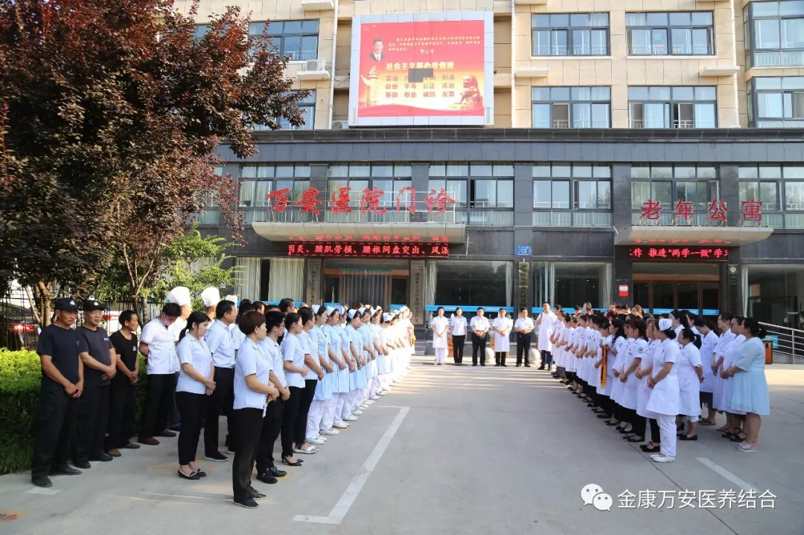
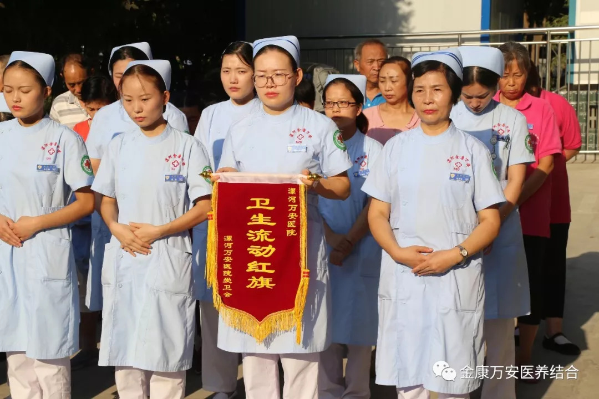
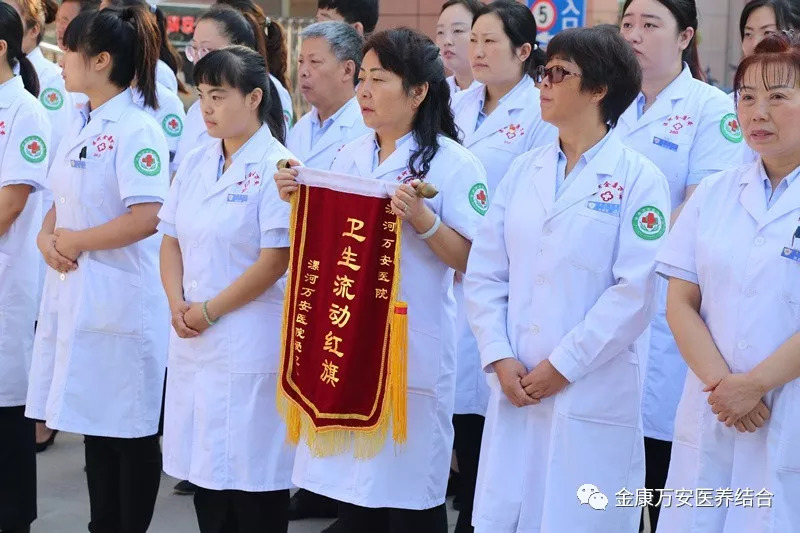
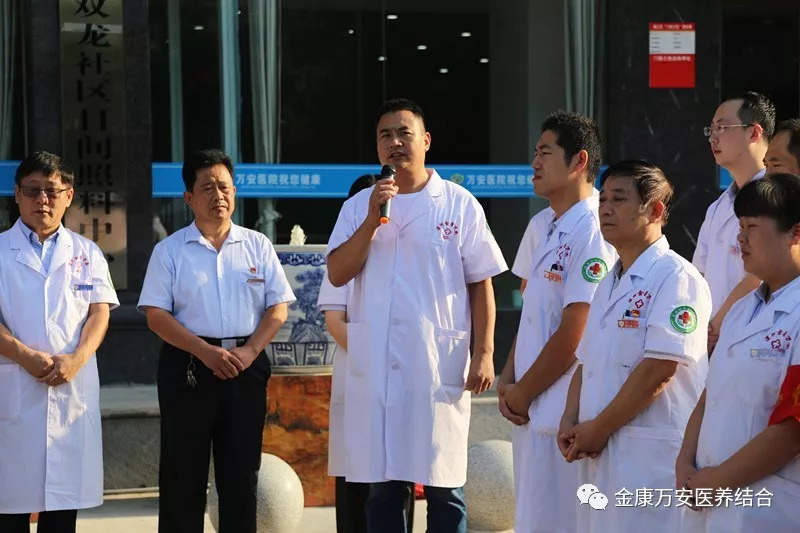
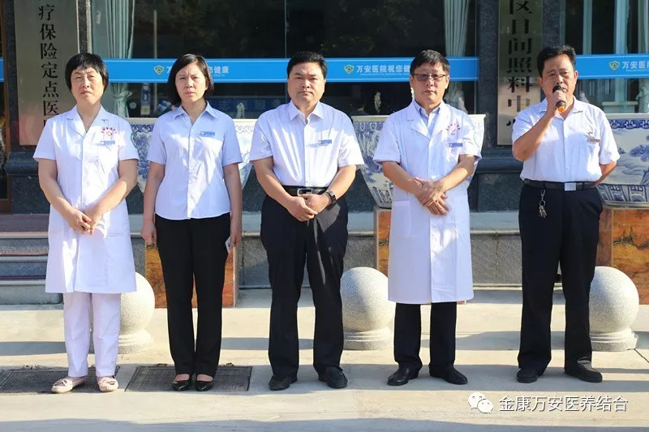
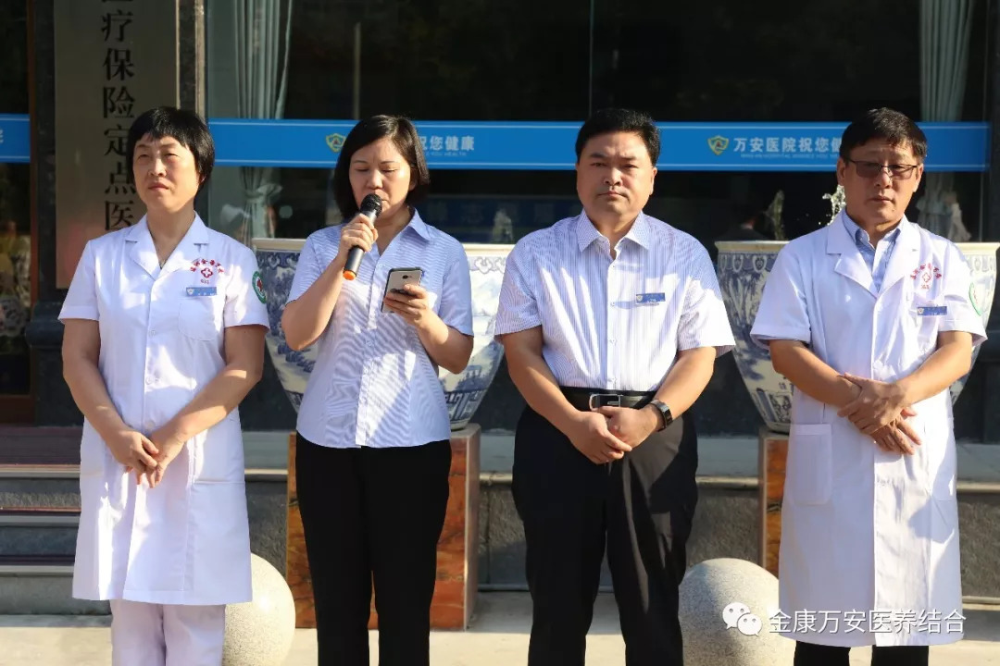
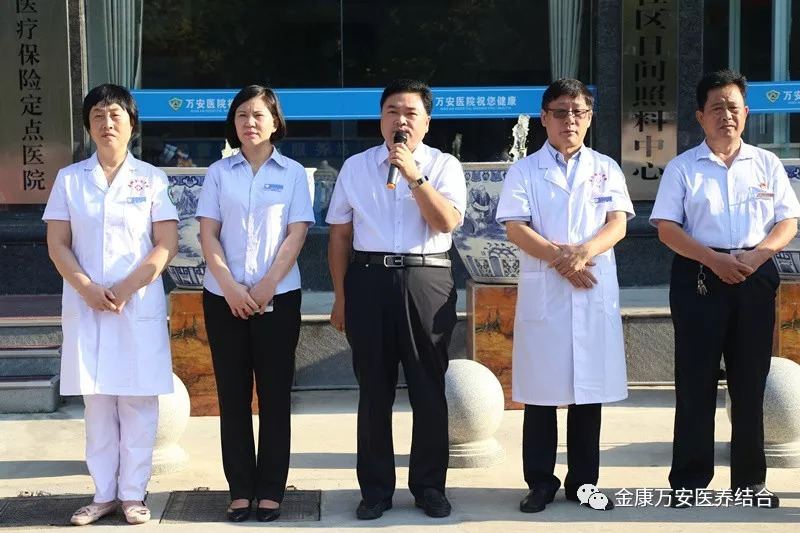

漯河万安康复医院、万安老年公寓召开周一分享晨会
人气: "" 时间：2018-08-27
2018年8月27日早上，漯河万安康复医院、万安老年公寓召开周一分享晨会，晨会由自律办王小虎主持，院长王卫峰、业务院长王立信、业务院长银令令、业务院长刘洋、后勤院长杨延顺等院领导参加此次晨会！



康复科、综合办公室获得卫生流动红旗

疼痛科主任廉四喜分享
会议伊始，首先由后勤院长杨延顺为康复科、综合办公室、养老部六楼颁发卫生流动红旗。

后勤院长杨延顺分享

业务院长银令令分享
会议中，后勤院长杨延顺对上周漯河万安康复医院、万安老年公寓卫生、安全、污水污泥检查工作进行总结汇报。其后是业务院长银令令给大家分享“目标的重要性”，提示大家无论在生活中还是工作中，都要有目标的行动，有了目标就有了做事的方向，这样就可以沿着这个方向去努力，事情容易成功。否则，气力乱用，花了气力却难以成功。
王院长总结
会议最后由院长王卫峰进行总结，王院长表示：1、要严抓、严管“两污一废工作”，医疗废物、污泥、污水管理工作不仅是院里的重要责任，也是每位家人的责任。2、创文工作从小事做起、从身边做起，说文明话，做文明事，为我市创文工作增砖添瓦。3、“安全重于泰山”，近期哈尔滨火灾事件又一次大家敲响安全警钟，希望各位家人在生活中、工作中一定注意消防安全，切实把消防安全落到实处，为我院患者及老人创造一个安全、舒适的环境。
